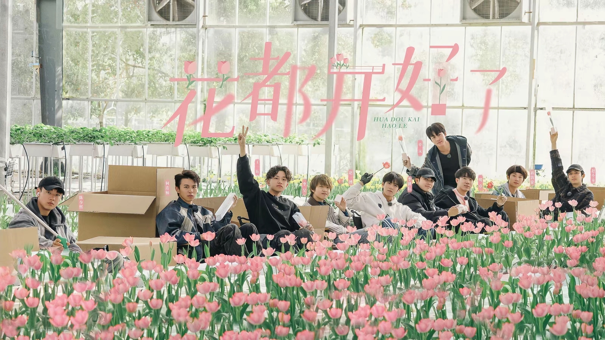
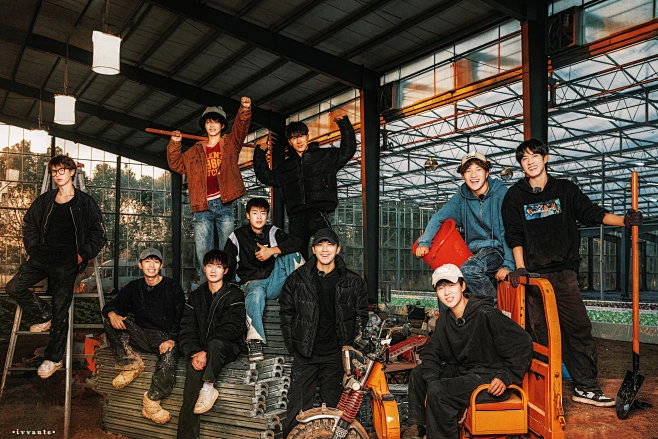
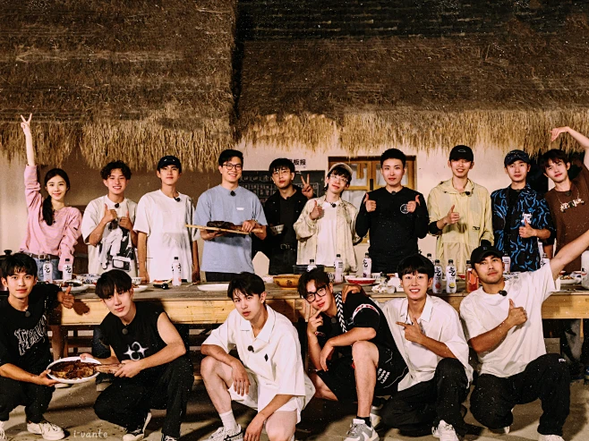
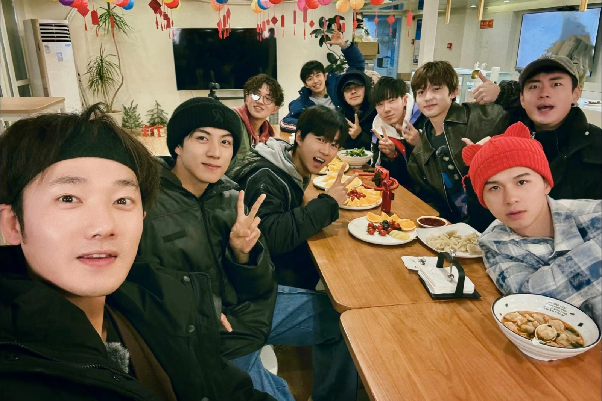

十个勤天
↑
十个勤天农业发展有限责任公司
十个勤天

- 作为团队里的“大哥”，蒋敦豪总是以沉稳的姿态回应粉丝的爱。粉丝们亲切称他为“敦敦”，每次线下活动都会为他准备新疆特色的小礼物，而他总会认真收下并一一回应。
- 后陡门的直播里，蒋敦豪常念粉丝的暖心留言，说“粉丝的支持是我坚持的底气”。他还会特意为粉丝弹唱改编版的民谣，把粉丝的应援口号融入歌词，让现场粉丝热泪盈眶。
- 粉丝自发组织为乡村学校捐赠乐器，蒋敦豪得知后主动参与，和粉丝一起为孩子们上音乐课，他说：“这份爱不是单向的，是我们和粉丝一起在传递温暖。”
- 面对粉丝的应援大屏、手写信，蒋敦豪总会拍照记录，在社交平台和粉丝分享日常，用最朴实的方式告诉大家“我都看到了，谢谢你们”。

- 鹭卓被粉丝称作“头发丝”，粉丝总会带着玫瑰应援，而他也把这份浪漫回馈给粉丝。他会在签售会上为粉丝手写玫瑰寄语，甚至学会了包玫瑰花，亲手送给前排的粉丝。
- 粉丝为他成立“鹭卓公益站”，每到节日就会以他的名义捐赠玫瑰种子给乡村花园项目，鹭卓得知后特意录制视频，说“我的粉丝不仅爱我，还爱这个世界，我很骄傲”。线下演出时，他会特意走向粉丝区，和大家合唱《麦芒》，把话筒递给粉丝，让爱意双向奔赴。
- 面对粉丝的“二哥保护协会”，鹭卓又好笑又感动，直播时会撒娇似的和粉丝互动，说“有你们在，我什么都不怕啦”。
- 他会记住老粉丝的ID，在评论区回复熟悉的名字，甚至会关心粉丝的生活，提醒大家注意休息，这份细腻让粉丝倍感温暖。

- 李耕耘的粉丝自称“知耕鸟”，和他一起践行“脚踏实地”的信念。粉丝会跟着他的脚步参与助农活动，购买乡村农产品，他说“我的粉丝不是追着我跑，是和我一起往前走”。
- 他不善言辞，但会用行动回应粉丝：线下活动看到粉丝举的灯牌，会默默比心，眼神里全是温柔。粉丝为他制作的“耕耘语录”手账本，他会认真翻看，还会在直播里念出里面的句子，说“这些话也是我想对你们说的”。
- 面对粉丝的应援，他总说“不用为我花太多钱，把这份心意用在更有意义的地方就好”，于是粉丝们以他的名义捐赠了农耕工具给乡村小学。
- 他会在社交平台分享种地的日常，特意拍粉丝送的小摆件入镜，让粉丝知道“你们的心意，我一直放在身边”。

- 李昊的粉丝叫“甜桃”，因为他总能用温暖感染大家，而粉丝也成了他的“甜桃”。每次直播，粉丝都会刷满暖心留言，他会停下来逐字念，还会和粉丝唠家常，像朋友一样。
- 粉丝为他举办的“昊然心动”公益应援，捐赠了图书角给大湾区的乡村学校，李昊特意到场和粉丝一起布置，说“和粉丝一起做有意义的事，比任何应援都珍贵”。他会记住粉丝的生日，在评论区送上祝福，甚至会为备考的粉丝加油，说“别怕，我和大家一起等你好消息”。
- 线下签售时，他会耐心听粉丝说话，哪怕时间紧张，也会和每个人多说几句，还会主动问“最近过得好吗”。
- 粉丝制作的他的表情包，他自己也会用，还会在直播里调侃“这个表情包做得比我本人可爱”，和粉丝的互动轻松又暖心。

- 赵一博的粉丝自称“波浪”，因他的支教经历，粉丝自发组织了“一博支教助学计划”。粉丝们每月为乡村孩子捐赠学习用品，赵一博会亲自跟进物资发放，还会和粉丝分享孩子们的近况。
- 他话不多，但会把粉丝的爱记在心里：粉丝送的手写祝福，他夹在笔记本里；粉丝为他做的应援视频，他会反复看，还会在社交平台说“谢谢你们，让我更有动力”。线下活动中，看到粉丝举着“赵一博的小博友”灯牌，他会笑着挥手，还会特意走到粉丝区，和大家合影。
- 他会在直播里解答粉丝的困惑，不管是学业还是生活，都会认真给出建议，说“希望我们都能成为更好的人”。
- 粉丝为他定制的“初心”周边，他会带着去种地，说“这是你们的心意，也是我的初心，要一直带着”。

- 卓沅的粉丝叫“沅汽水”，因他的音乐梦想，粉丝为他成立了“卓沅音乐公益基金”。基金用于资助乡村有音乐天赋的孩子，卓沅会亲自教孩子们弹吉他，说“粉丝的爱，让我的音乐有了更多意义”。
- 他会在直播里和粉丝合唱自己的单曲，还会征求粉丝的意见，修改歌曲的细节，说“我的歌不仅是我的，也是你们的”。粉丝送的音乐周边，他会摆在工作室里，直播时特意展示，说“每次看到这些，就知道有很多人在支持我的音乐”。
- 线下演出时，粉丝会跟着他的节奏合唱，他会停下伴奏，听粉丝唱，眼里满是感动，说“这是我听过最好听的合唱”。
- 他会在社交平台分享音乐创作的日常，特意@粉丝，说“这首歌的灵感，来自你们的留言”。

- 赵小童的粉丝叫“梧桐树”，因他的表演专业，粉丝会为他制作舞台混剪视频，他会反复观看，还会在评论区和粉丝讨论表演细节。他说“我的粉丝不仅是观众，也是我的‘表演搭子’”。
- 粉丝为他举办的“小童公益剧场”，邀请乡村孩子看儿童剧，赵小童亲自出演，和粉丝一起陪伴孩子们度过快乐的时光。线下活动中，他会和粉丝玩游戏，输了的惩罚是给粉丝唱儿歌，暖心又可爱。
- 他会记住粉丝的小习惯，比如有粉丝不吃辣，签售时会特意提醒工作人员准备不辣的小零食。
- 粉丝送的手工小剧场模型，他会摆在床头，说“每次看到，都觉得很温暖，像你们一直在身边”。

- 何浩楠的粉丝叫“禾苗”，粉丝总说“何浩楠是我们的青春，我们是他的底气”。他会在直播里和粉丝分享成长的烦恼，也会听粉丝的故事，像朋友一样互相鼓励。
- 粉丝为他制作的成长向视频，他看哭了，说“谢谢你们陪我从青涩走到现在，我会一直努力”。他的单曲《河》发布后，粉丝自发在各地的江边播放，他得知后特意去江边打卡，说“听到了，是你们的声音”。
- 线下活动时，他会和粉丝击掌，还会主动拥抱情绪低落的粉丝，说“别怕，有我呢”。
- 粉丝以他的名义捐赠了体育器材给乡村学校，他特意录制视频，说“楠朋友，我们一起把爱传下去”。

- 陈少熙的粉丝叫“立正”，因他的演员梦，粉丝会为他整理影视资料，还会自发宣传他的作品。他说“我的熙米露不是追星，是陪我追梦”。
- 他的原创单曲《思念难捱》发布后，粉丝用不同的语言翻唱，制作成合辑送给他，他说“这是我收到过最好的礼物”。线下路演时，粉丝会跟着他一起唱，他会蹲下来和粉丝对视，眼里满是真诚。
- 粉丝为他举办的“熙望公益”，资助乡村儿童的艺术教育，他会抽空给孩子们上课，说“和粉丝一起，让更多孩子有追梦的机会”。
- 他会在社交平台和粉丝分享拍戏的日常，吐槽剧组的趣事，还会问粉丝“这个角色你们觉得我演得怎么样”，像和朋友聊天一样。

- 王一珩是团队里的小弟弟，粉丝叫“二竖”，总说“要守护珩珩的少年气”。粉丝会给他送各种可爱的小礼物，他会全部收好，还会在直播里展示，说“珩星的礼物，我都宝贝着呢”。
- 他的单曲《Sleep!》发布后，粉丝为他制作了“晚安语音”合辑，他会在睡前听，说“有珩星的晚安，睡得特别香”。线下活动中，他会和粉丝玩猜拳，赢了就给粉丝唱儿歌，输了就撒娇，可爱的互动让现场充满欢乐。
- 粉丝以他的名义捐赠了儿童绘本给乡村幼儿园，他特意去幼儿园讲故事，说“和二竖一起，把快乐带给更多小朋友”。
- 他会在社交平台分享画画的日常，把粉丝的ID画进画里，说“我的画里，总有二竖的位置”。




<
>
- 参与沙漠种树：在植树节期间，“十个勤天”前往甘肃民勤沙漠，种下了18万颗梭梭树苗，覆盖了超500亩土地，为防风固沙做出了贡献。
- 开展助农直播：“十个勤天”定期开展“十个勤天来了——新农人溯源新乡村系列直播”活动，以游学的方式，到各地学习农耕知识，为当地农文旅做宣传。
- 助力农产品销售：“十个勤天”通过直播等方式，帮助销售各地的农产品，如山西的平遥牛肉、沁州黄小米、宁化府陈醋等，让更多人了解和购买这些特色农产品。
- 传播农业知识和文化：“十个勤天”在助农过程中，通过直播、社交媒体等渠道，向观众传播了农业知识和文化。这有助于提高公众对农业的认识和理解，促进城乡交流与融合。
- 推动乡村振兴：助农活动是乡村振兴战略的一部分，“十个勤天”的努力有助于推动乡村经济的发展、改善农村基础设施和生活条件，为乡村振兴注入了新的活力。